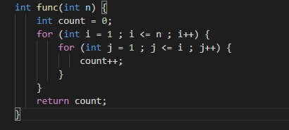

Ketika kita akan berpergian ke suatu tempat, tentu dalam mencapai tempat tujuan kita bisa melalui berbagai rute perjalanan. Namun permasalahannya adalah rute mana yang paling cepat yang bisa kita ambil untuk sampai di tempat tujuan? Sama halnya dengan algoritma, dalam menyelesaikan suatu permasalahan, kita tahu ada banyak algoritma yang dapat digunakan, tetapi permasalahan utamanya ialah algoritma mana yang lebih efektif dan efisien? Oleh karenanya, kompleksitas waktu dan memori suatu algoritama sangat diperlukan dalam pemecahan masalah tersebut.
Apa itu Notasi Big - O ?
Notasi Big – O adalah salah satu cara dalam mengkonversi keseluruhan langkah suatu algoritma ke dalam aljabar, dengan hanya memperhatikan konstanta dan koefisien yang berdampak besar terhadap keseluruhan kompleksitas permasalahan yang diselesaikan oleh algoritma tersebut. Contoh sederhananya ialah ketika diberikan persamaan aljabar 6n2 - 2n + 10, maka dapat diperoleh notasi Big - O nya ialah O(n2).
Notasi ini pertama kali digunakan oleh ahli matematika bernama Paul Bachmann pada tahun 1896. Kemudian di tahun 1909, seorang ahli teori bilangan, Edmund Landau berhasil mempopulerkan notasi ini. Oleh karenanya, notasi ini kerap kali disebut dengan simbol Landau, yang dimana simbolisme ini dapat digunakan dalam teori kompleksitas, ilmu komputer, dan matematika untuk menggambarkan perilaku asimtotik suatu fungsi.
Lantas, apa fungsi yang dimiliki oleh Notasi Big - O ?
digunakan untuk mengukur tingkat kompleksitas dan efisiensi suatu algoritma
digunakan untuk mengklasifikasi algoritma sesuai dengan kebutuhan waktu dan ruang, yang dikenal dengan worst-case dan best-case
digunakan untuk membandingkan beberapa algoritma dari untuk persoalan yang sama untuk menentukan algoritma yang terbaik dalam pemecahan masalahnya
Bentuk Umum dari Notasi Big - O
tidak dipengaruhi oleh banyaknya input yang diberikan kepada sebuah algoritma
akan berbanding lurus dengan jumlah input yang diberikan
akan berbanding lurus dengan jumlah kuadrat input yang diberikan
jumlah tahapan yang dilakukan oleh fungsi tersebut berkurang berdasarkan suatu faktor
pertumbuhannya berlipat ganda dengan setiap penambahan ke kumpulan data input
Salah satu contoh perhitungan kompleksitas algoritma menggunakan Notasi Big - O

Karena pada contoh diatas, terjadi looping yang berulang kali, maka sudah dipastikan bahwa time complexity tidak akan bersifat linear. Ketika i = 1, maka fungsi program akan dijalankan sekali. Ketika i = 2, maka fungsi program akan dijalankan dua kali, dan seterusnya hingga i = n. Sehingga, dapat disimpulkan bahwa perintah count++ akan dijalankan sebanyak:
1 + 2 + 3 + .... + n = (n2 + n) ⁄ 2
Maka, dari persamaan aljabar tersebut, diperoleh time complexity-nya ialah O(n2). Hal ini sejalan dengan konsep Big - O yang hanya memperhatikan konstanta dan koefisien yang berdampak besar. Selain itu, contoh dan pembahasan lebih lengkap tentang Notasi Big - O dapat kita simak melalui video di bawah ini.